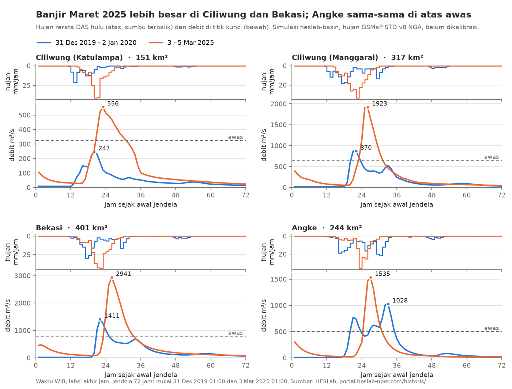

Banjir Tahun Baru 2020 dan banjir 4 Maret 2025 sama-sama melumpuhkan Jabodetabek. Bedanya ada pada tempat hujan jatuh. Pada 2020 hujan menyebar luas dan paling berat di Jakarta bagian barat (Angke). Pada 2025 hujan lebih deras dan terpusat di hulu Ciliwung serta Bekasi. Tulisan ini membandingkan keduanya dengan simulasi model HESLab untuk seluruh Wilayah Sungai (WS) Ciliwung-Cisadane, ditambah berita dan catatan resmi saat itu.

Hujan: 2020 lebih luas, 2025 lebih deras
| Ukuran (GSMaP STD v8, rerata DAS) | 2020 | 2025 |
|---|---|---|
| Hujan 24 jam maks, seluruh WS (5365 km²) | 150 mm, peringkat 1 | 135 mm, peringkat 4 |
| Hujan 1 jam maks, DAS Ciliwung hulu Katulampa | 21 mm | 41 mm |
| Hujan 1 jam maks, DAS Kali Bekasi | 30 mm | 43 mm |
| Hujan 1 jam maks di satu subDAS | 68 mm | 103 mm |
Peringkat dihitung di antara hujan 24 jam terbesar tiap tahun, 2015 sampai 2025. Rata-rata seluruh WS, hujan 2020 adalah yang terbesar dalam sebelas tahun itu. Namun hujan 2025 jauh lebih deras per jam, terutama di hulu yang curam (Puncak, Bogor, Cileungsi-Cikeas). Akibatnya jumlah ruas sungai di atas ambang awas justru lebih banyak pada 2025: 1186 ruas (72 %) dibanding 874 ruas (53 %) dalam jendela 72 jam.
Wilayah mana yang lebih parah
| Sistem sungai | Jam di atas awas 2020 / 2025 | Volume 72 jam 2020 / 2025 | Debit puncak 2020 / 2025 | Lebih parah |
|---|---|---|---|---|
| Ciliwung hulu (Katulampa) | 0 / 10 jam | 13 / 32 juta m³ | 247 / 556 m³/s | 2025 |
| Ciliwung (Manggarai) | 3 / 9 jam | 43 / 73 juta m³ | 870 / 1923 m³/s | 2025 |
| Bekasi (Kali Bekasi) | 5 / 10 jam | 64 / 116 juta m³ | 1411 / 2941 m³/s | 2025 |
| Angke (hilir) | 13 / 6 jam | 48 / 42 juta m³ | 1028 / 1535 m³/s | 2020 lebih lama |
| Cisadane (hilir) | 0 / 5 jam | 131 / 189 juta m³ | 1908 / 3202 m³/s | 2025 |
Ciliwung. Pada 2020 Katulampa tidak pernah melewati awas di model, dan catatan pintu air saat itu juga hanya siaga 3 (130 cm) sementara Depok dan Angke Hulu siaga 1 (CNN Indonesia). Pada 2025 hujan jatuh tepat di hulu: Katulampa di atas awas 10 jam, dan puncak model pukul 23:00 bertepatan dengan laporan tinggi muka air 150 cm di bendung itu (RMOL).
Bekasi. Kedua kejadian memukul Bekasi, tetapi 2025 jauh lebih berat: volume aliran hampir dua kali lipat dan hujan 24 jam DAS Kali Bekasi (259 mm) tertinggi dalam 2015 sampai 2025. Berita sejalan: pada 2025 Kali Bekasi mencapai 875 cm dan delapan dari 12 kecamatan Kota Bekasi terdampak (Katadata). Pada 2020 perumahan di tepi Cikeas dan Kali Bekasi seperti Pondok Gede Permai juga terendam dalam (Kontan).
Angke. Inilah satu-satunya sistem yang lebih parah pada 2020. Puncak 2025 memang lebih tinggi, tetapi pada 2020 debit Angke di atas awas 13 jam dengan dua puncak (31 Desember pukul 21:00 dan 1 Januari pukul 09:00), dan volumenya lebih besar. Hujan 24 jam di DAS Angke pada 2020 (200 mm) adalah peringkat 2 dalam 2015 sampai 2025, sedangkan 2025 peringkat 7.
Mengapa berbeda
- Letak hujan. Banjir besar tidak hanya ditentukan oleh jumlah hujan, tetapi juga di mana hujan itu jatuh. Hujan 2020 terbesar di wilayah tengah dan hilir, termasuk 377 mm di Halim menurut BNPB (Mongabay). Hujan 2025 jatuh di hulu yang curam, sehingga airnya cepat terkumpul ke sungai.
- Intensitas per jam. Hujan per jam 2025 hampir dua kali hujan 2020 di hulu Ciliwung. Pada kedua kejadian ini, debit puncak lebih mengikuti intensitas per jam daripada jumlah harian.
- Waktu. Pada 2020 hujan turun bertahap sejak sore sampai pagi, menghasilkan dua puncak di Angke. Pada 2025 hujan terderas jatuh dalam beberapa jam, sekitar pukul 20:00 tanggal 3 Maret sampai 02:00 tanggal 4 Maret.
- Waktu peringatan. Hujan di hulu memberi jeda sebelum banjir tiba di hilir. Untuk kejadian 2025 di DAS Bekasi, hujan GSMaP waktu-nyata dengan model UPerRRM memberi waktu lima sampai enam jam sebelum banjir di hilir (Januriyadi dkk., 2026). Banjir yang dipicu hujan lebat di hilir, seperti Angke pada 2020, cenderung menyisakan waktu yang lebih pendek.
Batasan
- Model belum dikalibrasi. Debit puncak model di Bekasi 2025 (2941 m³/s) jauh di atas sekitar 1.100 m³/s yang dilaporkan di Bendung Bekasi, dan puncaknya 4,5 jam lebih awal. Perbandingan antarkejadian lebih bermakna daripada angka debitnya.
- Hujan satelit (kotak sekitar 10 km) tidak menangkap hujan titik ekstrem, misalnya 377 mm di Halim.
- Model memakai bangunan air yang ada sekarang untuk kedua kejadian. Bendungan kering Ciawi dan Sukamahi (diresmikan 23 Desember 2022) dan Sodetan Ciliwung ke Kanal Banjir Timur (diresmikan 31 Juli 2023) belum ada pada 2020, sehingga debit Ciliwung 2020 di model, terutama di Manggarai, cenderung lebih kecil daripada keadaan saat itu.
- Ambang awas adalah ambang bawaan model, bukan ambang resmi pintu air.
Kronologi lengkap tiap kejadian: Banjir Tahun Baru 2020 dan Banjir Maret 2025. Data per ruas dapat dilihat di Historis WS Ciliwung-Cisadane.
Rujukan
Januriyadi, N. F., Moe, I. R., Cikmit, A. A., & Sejati, W. (2026). Utilization of realtime GSMaP satellite data for flood early warning in Bekasi watershed using UPerRRM. International Journal of Disaster Management, 9(1), 38–53. https://doi.org/10.24815/ijdm.v9.i1.377